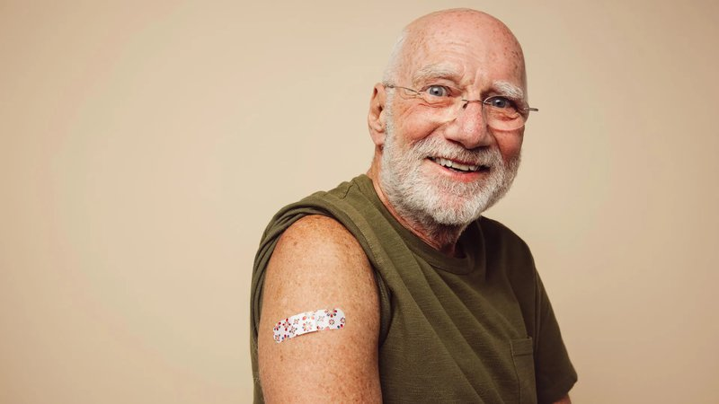

2025-10-19T12:59:16-04:00
A new drug combo of enzalutamide and hormone therapy has been shown to extend survival for men with recurring prostate cancer, reducing death risk by over 40%. The study followed more than 1,000 patients worldwide and was led by Cedars-Sinai researchers. Experts call it a game changer that's likely to reshape treatment guidelines for aggressive prostate cancer.
📄 Read full article
2025-10-19T12:43:31-04:00

A groundbreaking study reveals that cancer patients who received a COVID-19 mRNA vaccine within 100 days of starting immunotherapy lived dramatically longer than those who didn't. Researchers from the University of Florida and MD Anderson Cancer Center discovered that the vaccine's immune-activating properties may boost cancer-fighting responses, acting like a nonspecific "flare" that reawakens the immune system.
📄 Read full article
2025-10-19T11:58:17-04:00
Researchers from The University of Western Australia node at the International Centre for Radio Astronomy Research (ICRAR) have uncovered a colossal bridge of neutral hydrogen gas linking two dwarf galaxies, which spans an astonishing 185,000 light-years between galaxies NGC 4532 and DDO 137, located 53 million light-years from Earth.
📄 Read full article
2025-10-19T11:46:27-04:00
Mars' north polar vortex locks its atmosphere in extreme cold and darkness, freezing out water vapor and triggering a dramatic rise in ozone. Scientists found that the lack of sunlight and moisture lets ozone build up unchecked. This discovery, made with data from ESA's and NASA's orbiters, could reveal clues about Mars' past atmospheric chemistry and potential for life.
📄 Read full article
2025-10-18T22:53:54-04:00
Researchers have unveiled a new model for the universe's birth that replaces cosmic inflation with gravitational waves as the driving force behind creation. Their simulations show that gravity and quantum mechanics may alone explain the structure of the cosmos. This elegant approach challenges traditional Big Bang interpretations and revives a century-old idea rooted in Einstein's work.
📄 Read full article